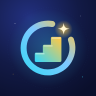

BILIM QADAM9-сынып · 1–2 тоқсан
Алгебра, геометрия, физика және информатика бойынша 10 сұрақтан тұратын қысқа тесттер. Қателессең, AI-көмекші қадамдап түсіндіреді.
Сәлем, !
Рейтинг төрт пәннің ең жақсы нәтижелерінің қосындысымен есептеледі (ең көбі 40).
iPhone-да қосымша ретінде ашу үшін: Safari-де «Бөлісу» батырмасын бас, сосын «Экран «Домой»-ға қосу» таңда.